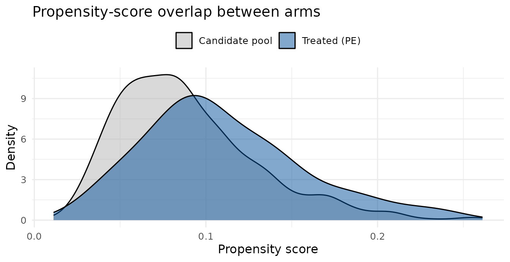

Designing a matched-control mystery-caller audit
Source:vignettes/matched-control-design.Rmd
matched-control-design.RmdSome mystery-caller studies are case–control by design: a treated group of practices — private-equity-owned, hospital-acquired, or a specific chain — is compared against otherwise-similar practices. Two problems have to be solved before any calls are placed:
- Fairness. Treated and control practices differ on things other than the exposure (physician age, degree, gender, local market). If controls are drawn at random, an apparent access difference may just reflect those imbalances.
-
Feasibility. Callers can only place so many calls,
and a control is only useful if it is genuinely callable —
ideally in the same state and a short drive from its treated
counterpart, so the two share a labor market and payer
Matching each treated practice to a nearby, comparable control addresses both. This vignette walks that design end to end — geocoding a roster, building a propensity-score-matched control cohort inside a geographic caliper, assembling the paired calling list, and analysing the completed audit — motivated by a study of private-equity ownership of OB/GYN practices. (Deriving the treated cohort itself — tying practice names back to an ownership reference — is an upstream step outside the package.)
1. The treated cohort and a candidate pool
We simulate 60 private-equity-owned (“treated”) practices concentrated in three metros, plus a large pool of independent candidate controls in the same metros. Each practice carries the covariates we want to balance — years in practice, physician gender, and degree (MD vs DO) — and a city/state. The treated practices are drawn slightly younger and more often DO-led, so the arms are not balanced to begin with.
set.seed(2026)
metros <- list(
CO = c("Denver", "Aurora", "Lakewood"),
TX = c("Dallas", "Irving", "Plano"),
FL = c("Miami", "Hialeah", "Miami Beach")
)
draw <- function(n, treated) {
st <- sample(names(metros), n, TRUE)
data.frame(
npi = NA_integer_,
state = st,
city = vapply(st, function(s) sample(metros[[s]], 1), character(1)),
years = round(rpois(n, if (treated) 11 else 12)),
female = rbinom(n, 1, if (treated) 0.45 else 0.55),
md = rbinom(n, 1, if (treated) 0.72 else 0.82),
stringsAsFactors = FALSE
)
}
treated <- draw(60, TRUE); treated$npi <- 1:60
candidates <- draw(600, FALSE); candidates$npi <- 1001:1600
head(treated)
#> npi state city years female md
#> 1 1 CO Denver 6 0 1
#> 2 2 CO Lakewood 5 1 0
#> 3 3 CO Lakewood 6 0 0
#> 4 4 TX Dallas 10 1 1
#> 5 5 CO Aurora 8 1 0
#> 6 6 FL Miami 16 1 02. Aligning rosters by name
Before matching, you often have to reconcile two rosters that spell
the same practice differently — the ownership list that defines
“treated”, and the NPPES or CMS roster the candidate pool comes from.
Exact joins fail on LLC vs PC,
& vs and, and stray punctuation.
mysterycall_normalize_org_name() collapses those variants
to a single canonical key:
messy <- c("Women's Health Specialists, LLC", "Womens Health Specialists PC",
"Rocky Mountain OB & GYN, P.A.")
mysterycall_normalize_org_name(messy)
#> [1] "WOMENS HEALTH SPECIALISTS" "WOMENS HEALTH SPECIALISTS"
#> [3] "ROCKY MOUNTAIN OB AND GYN"In practice you would add the key to both frames and merge on it:
cohort <- data.frame(name = messy)
roster <- data.frame(name = c("WOMENS HEALTH SPECIALISTS", "ROCKY MOUNTAIN OB AND GYN"),
owner = c("PE-backed", "Independent"))
cohort$key <- mysterycall_normalize_org_name(cohort$name)
merge(cohort, roster, by.x = "key", by.y = "name")
#> key name owner
#> 1 ROCKY MOUNTAIN OB AND GYN Rocky Mountain OB & GYN, P.A. Independent
#> 2 WOMENS HEALTH SPECIALISTS Women's Health Specialists, LLC PE-backed
#> 3 WOMENS HEALTH SPECIALISTS Womens Health Specialists PC PE-backed3. Geocode from city + state
A geographic caliper needs coordinates, but the roster only has a
city and a state. mysterycall_geocode_city_state() looks
them up in the bundled place table (~32,000 US places) — no network, no
API key — enough to seed a caliper or QC how far apart matched practices
sit. For rooftop-accurate coordinates from full street addresses, use a
dedicated geocoding service instead.
tg <- mysterycall_geocode_city_state(treated$city, treated$state)
treated$lat <- tg$lat; treated$lon <- tg$lon
cg <- mysterycall_geocode_city_state(candidates$city, candidates$state)
candidates$lat <- cg$lat; candidates$lon <- cg$lon
c(treated_resolved = mean(!is.na(treated$lat)),
candidate_resolved = mean(!is.na(candidates$lat)))
#> treated_resolved candidate_resolved
#> 1 1Places the bundled table misses (townships, renamed municipalities)
can be supplied through the overrides argument rather than
dropped.
4. The propensity model and common support
Matching rests on the propensity score — the modeled
probability of being treated given the covariates.
mysterycall_build_matched_controls() fits it internally,
but it is worth inspecting. Here is the same model, fit directly:
ps_df <- rbind(cbind(treatment = 1, treated[, c("years", "female", "md")]),
cbind(treatment = 0, candidates[, c("years", "female", "md")]))
ps_fit <- glm(treatment ~ years + female + md, binomial, ps_df)
round(coef(summary(ps_fit)), 3)
#> Estimate Std. Error z value Pr(>|z|)
#> (Intercept) -0.420 0.528 -0.796 0.426
#> years -0.132 0.043 -3.086 0.002
#> female -0.397 0.274 -1.447 0.148
#> md -0.223 0.323 -0.689 0.491Matching only works where treated and control scores overlap (the common-support assumption). A treated practice with a score no control comes close to has no honest match. Compare the two score distributions:
treated$ps <- predict(ps_fit, treated, type = "response")
candidates$ps <- predict(ps_fit, candidates, type = "response")
library(ggplot2)
ggplot(mapping = aes(x = ps)) +
geom_density(data = candidates, aes(fill = "Candidate pool"), alpha = 0.5) +
geom_density(data = treated, aes(fill = "Treated (PE)"), alpha = 0.5) +
scale_fill_manual(NULL, values = c("Candidate pool" = "grey70",
"Treated (PE)" = "#08519c")) +
labs(x = "Propensity score", y = "Density",
title = "Propensity-score overlap between arms") +
theme_minimal(base_size = 12) + theme(legend.position = "top")
Good overlap here: every treated score is well inside the candidate range.
5. Build the matched control cohort
Now the match itself.
mysterycall_build_matched_controls() fits the propensity
model, then greedily matches each treated practice 1:1 to its nearest
control on the propensity score — within the same state
and a 25-mile caliper, without
replacement (each control is used at most once). The greedy
scheme, with a hard state + distance constraint, is what makes every
control genuinely callable.
m <- mysterycall_build_matched_controls(
treated, candidates,
ps_formula = treatment ~ years + female + md,
id_col = "npi",
exact = "state",
coords = c("lat", "lon"),
caliper_miles = 25
)
m
#> <mysterycall matched controls: 60 of 60 treated matched (0 unmatched)>
#> median control distance: 9.6 miles; max ps difference: 0.030
#>
#> Covariate balance (standardized mean differences):
#> # A tibble: 3 × 4
#> covariate mean_treated mean_control smd
#> <chr> <dbl> <dbl> <dbl>
#> 1 years 10.6 10.6 0
#> 2 female 0.483 0.5 -0.0331
#> 3 md 0.75 0.75 0
head(m$pairs)
#> # A tibble: 6 × 7
#> pair_id treated_id control_id ps_treated ps_control ps_diff distance_miles
#> <int> <int> <int> <dbl> <dbl> <dbl> <dbl>
#> 1 1 1 1469 0.192 0.186 0.00644 11.4
#> 2 2 2 1598 0.186 0.186 0.0000767 13.3
#> 3 3 3 1245 0.229 0.206 0.0225 13.3
#> 4 4 4 1017 0.0860 0.0860 0 0
#> 5 5 5 1356 0.133 0.133 0 0
#> 6 6 6 1508 0.0505 0.0505 0.0000243 4.456. Did matching work? Balance before and after
The point of matching is to erase the covariate imbalance we built in. Compare the standardized mean difference (SMD) of each covariate before matching (treated vs. the whole candidate pool) and after (treated vs. matched controls). An SMD below about 0.1 is the usual “well-balanced” rule of thumb.
smd <- function(a, b) {
(mean(a) - mean(b)) / sqrt((var(a) + var(b)) / 2)
}
before <- vapply(c("years", "female", "md"),
function(v) smd(treated[[v]], candidates[[v]]), numeric(1))
after <- setNames(m$balance$smd, m$balance$covariate)
round(data.frame(before_matching = before, after_matching = after[names(before)]), 3)
#> before_matching after_matching
#> years -0.451 0.000
#> female -0.190 -0.033
#> md -0.153 0.000Every covariate moves toward zero after matching.
7. How tight a caliper? A sensitivity sweep
The caliper trades geographic closeness against how many treated practices find a match. Tighten it and controls are nearer but more treated practices go unmatched. Sweep a few values:
sweep <- sapply(c(5, 10, 25, 50, 100), function(cm) {
mm <- mysterycall_build_matched_controls(
treated, candidates, treatment ~ years + female + md,
id_col = "npi", exact = "state", coords = c("lat", "lon"),
caliper_miles = cm)
c(caliper_miles = cm, matched = mm$n_matched,
median_dist = round(stats::median(mm$pairs$distance_miles, na.rm = TRUE), 1))
})
t(sweep)
#> caliper_miles matched median_dist
#> [1,] 5 60 0.0
#> [2,] 10 60 0.0
#> [3,] 25 60 9.6
#> [4,] 50 60 9.6
#> [5,] 100 60 9.6Report the caliper you chose and this trade-off in the methods; it is a reviewer’s first question.
8. The matched calling list
Stack the two arms into one long calling list, tagged by matched pair
— what the callers work from.
(mysterycall_export_gsheet_caller_list() writes this out in
a Google-Sheets-ready format.)
9. Analyse the paired audit
Suppose the calls are complete. We simulate an offer and a wait time for each practice, with PE practices a little less likely to accept and a little slower:
is_pe <- call_list$arm == "PE"
call_list$accepted <- rbinom(nrow(call_list), 1, ifelse(is_pe, 0.62, 0.78))
call_list$wait_days <- ifelse(
call_list$accepted == 1,
rnbinom(nrow(call_list), mu = ifelse(is_pe, 24, 18), size = 3), NA)Because the design is matched, the comparison is within pair, and only the discordant pairs (one arm accepted, the other did not) carry information about the exposure. The same within-cluster tools used for insurance-scenario studies apply, with the matched pair as the unit and the arm as the “scenario”. Acceptance, via the exact McNemar test:
mysterycall_paired_acceptance_mcnemar(
call_list, id_col = "pair_id", scenario_col = "arm", outcome_col = "accepted")
#> <mysterycall paired McNemar: 1 contrast(s), MDE at 80% power>
#> # A tibble: 1 × 9
#> contrast n_paired concordant discordant disc_favor_a disc_favor_b odds_ratio
#> <chr> <int> <int> <int> <int> <int> <dbl>
#> 1 PE vs Con… 60 30 30 8 22 0.364
#> # ℹ 2 more variables: mcnemar_p <dbl>, mde_or_power <dbl>The discordant,
disc_favor_a/disc_favor_b, and
odds_ratio columns show how many pairs split each way and
the direction of the effect; mde_or_power is the smallest
odds ratio this many discordant pairs could detect. Wait time, via the
within-pair paired comparison (mean difference with a paired-t CI, plus
the Wilcoxon signed-rank p-value):
mysterycall_paired_wait_within_practice(
call_list, id_col = "pair_id", scenario_col = "arm", wait_col = "wait_days")
#> <mysterycall paired wait: 1 contrast(s), MDE at 80% power>
#> # A tibble: 1 × 9
#> contrast n_paired mean_diff_days ci_lower ci_upper sd_diff paired_t_p
#> <chr> <int> <dbl> <dbl> <dbl> <dbl> <dbl>
#> 1 PE vs Control 24 7.25 -0.585 15.1 18.6 0.0681
#> # ℹ 2 more variables: wilcoxon_p <dbl>, mde_days_power <dbl>10. Power for the next matched study
Sizing a follow-up uses the two-part power tools, treating the arm as the exposure — a binary offer on every call plus a wait time only among offers:
mysterycall_twopart_power(
n_total = c(120, 200), offer_ref = 0.78, offer_trt = 0.62,
wait_ref = 18, wait_trt = 24, phi = 3, n_sim = 50, seed = 1)
#> <mysterycall two-part power: 2 sample size(s), 50 sims, alpha 0.050>
#> # A tibble: 2 × 8
#> n_total n_ref n_trt pow_offer pow_wait mean_offered convergence_rate n_sim
#> <dbl> <dbl> <dbl> <dbl> <dbl> <dbl> <dbl> <dbl>
#> 1 120 60 60 0.38 0.6 84.6 1 50
#> 2 200 100 100 0.76 0.88 140. 1 50Assumptions and limitations
- Matching balances only observed covariates. Unmeasured differences between PE-owned and independent practices can still confound the comparison; matching is not randomization.
- Greedy, not optimal. Matches are made one treated unit at a time in a fixed order, so the total distance is not globally minimized. For this design — where a callable, in-caliper control matters more than the global optimum — greedy is the right trade-off; when it is not, an optimal matcher (e.g. the package) is the alternative.
-
City-level geocoding.
mysterycall_geocode_city_state()places every practice at its city centroid, so within-city pairs read as zero miles apart. That is fine for a coarse caliper; a study reporting exact separations should geocode full street addresses. -
Report the unmatched. Treated practices with no
in-caliper control are dropped from the analysis; state how many
(
m$n_unmatched) and whether they differ systematically, since that shapes who the study generalizes to.
Recap
From a treated cohort and a candidate pool to a fair, callable comparison and its analysis: reconcile rosters by normalized name, geocode, check propensity-score overlap, build a matched control group inside a geographic caliper, confirm balance improved, choose the caliper deliberately, assemble the paired calling list, and analyse the completed audit with the matched McNemar and paired-wait tests — then power the next one.